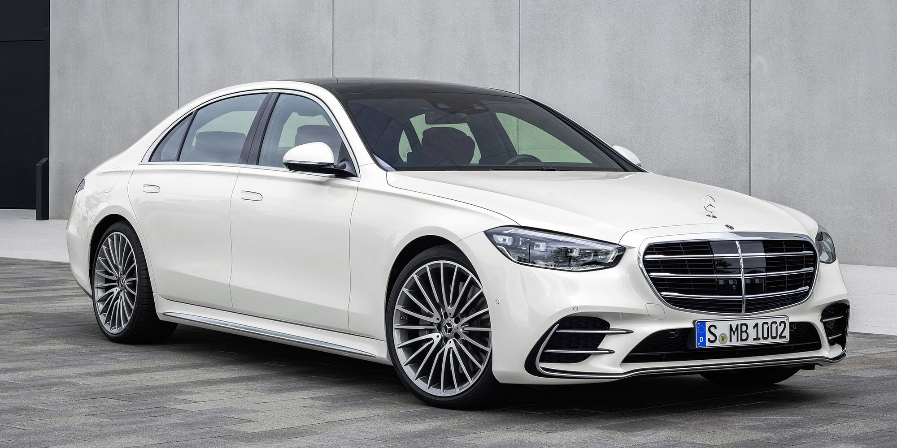

Introduction
Mercedes-Benz introduced the seventh-generation S-Class luxury sedan for 2021. For the 2022 model year, it adds an even more luxurious Maybach model, with an available twin-turbo V-12 engine in addition to a twin-turbo V-8. The regular S-Class competes against BMW 7 Series, Audi A8, Lexus LS, Genesis G90, and Tesla Model S while the Maybach S-Class variants straddle the upper echelons of the full-size luxury sedan segment and the ultra-luxe tier occupied by Bentley and Rolls-Royce.
Traditionally, the S-Class has been the benchmark for the luxury full-size sedan segment.
It deserves to retain this reputation as Mercedes-Benz nailed the execution on the latest installment of its gas-powered flagship (read about the EQS-Class electric flagship here).
All variants of the S-Class are stuffed with cutting-edge technology, including Level 2 semi-autonomous driving capabilities, augmented-reality navigation, and a 3-D gauge cluster. These features are integrated into the driving experience seamlessly.
Mercedes didn't let the S-Class' driving dynamics fall by the wayside while cramming all that tech into its flagship, either.
This full-size luxury sedan exhibits excellent on-road poise and treats occupants to a comfortable ride.
Aside from having what could possibly be too much tech for some folks, the only other downside to the S-Class is its segment-topping starting price.
The 2022 Mercedes-Maybach S-Class variants exhibit all these great characteristics while adding flair to the exterior styling and unique touches to the interior. It has a lot of bling, but it also delivers in all the departments needed for a luxury vehicle at its price point. Speaking of price, the Maybach sedans represent somewhat of a good deal in the ultra-luxury world. The top-spec S680 starts at less than half the price of the Rolls-Royce Phantom while still exuding the glitz its target buyers expect.
Aspiring Web Developer | Designer | Creator
Aspiring Web Developer | Designer | Creator


Introductory Key Value positions
- Luxury and Comfort
- Innovation
- Performance
- Safety
- Sustainablity
Aspiring Web Developer | Designer | Creator
Aspiring Web Developer | Designer | Creator
Customer Testimonials for Mercedes-Benz

Alaa alslaity
"Driving my new Mercedes-Benz has transformed my daily commute into a luxurious experience. The technology is intuitive, and the comfort is unmatched. I can't imagine driving anything else!"

Kamala Harris.
"I recently purchased a Mercedes-Benz SUV, and I am in love with the safety features and spacious interior. It's perfect for my family. I feel secure and stylish on every trip!"

Donald. J .Trump
I've owned several luxury cars, but the performance of my Mercedes-Benz sedan is in a league of its own. The smooth ride and powerful engine make every drive a pleasure."
"The design and craftsmanship of my Mercedes are simply breathtaking. It turns heads wherever I go, and I love how it feels to drive a car that truly embodies luxury."
Key value Proposition
| Key value Proposition |
Description |
Customer Benefit |
| Luxury and Comfort |
High-quality materials and meticulous |
Premium driving experience and satisfaction |
| Innovation |
Cutting edge technology, including advanced safety features |
Enhanced safety and convenience while driving |
| Performance |
Powerful engines and superior handling |
Exceptional driving dynamics and responsiveness |
Aspiring Web Developer | Designer | Creator
Aspiring Web Developer | Designer | Creator
Aspiring Web Developer | Designer | Creator
Featured Projects

Project 1
This project showcases the The Mercedes-Benz S-Class Generation project showcases the evolution of the S-Class series, emphasizing luxury, innovation, and safety advancements since 1951. Each generation has introduced groundbreaking features, such as crumple zones, airbags, and technological advancements like the MBUX system and rear-axle steering. The project highlights Mercedes-Benz's commitment to combining form, function, and futuristic technology in its flagship models

Project 2
This project demonstrates The Mercedes-Benz S-Class Generation project documents the transformative journey of the S-Class from its inception. It's a celebration of the model's role in automotive excellence, showcasing key innovations and luxury advancements across decades. This historical narrative underscores Mercedes-Benz's dedication to enhancing passenger experience, safety, and performance, marking the S-Class as a symbol of the brand's pioneering spirit and engineering prowess.